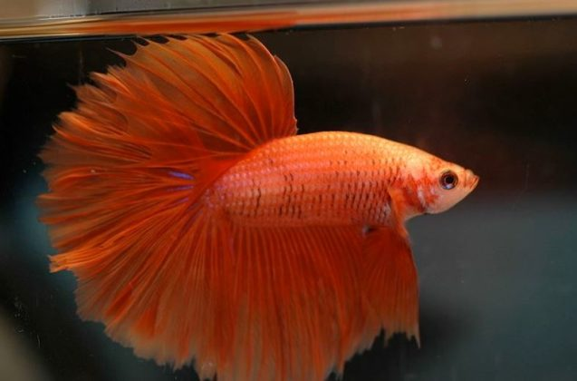
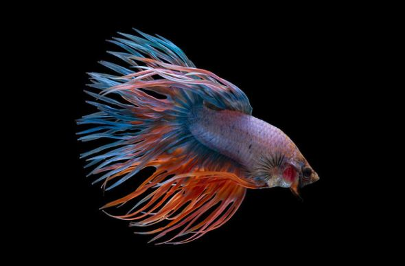
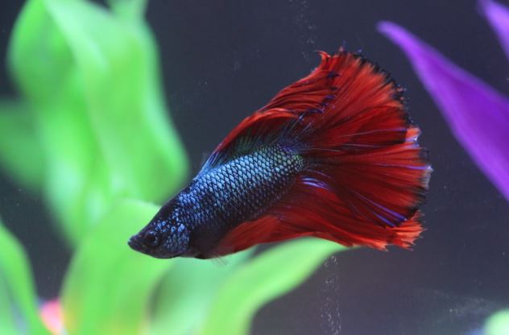

Di Posting Oleh Admin
5Jenis Ikan Cupang yang Bisa Anda Pilih untuk Dipelihara
Jenis Ikan Cupang yang Bisa Anda Pilih untuk Dipelihara
Bagi Anda yang sedang mencari hewan peliharaan, mungkin ikan cupang bisa menjadi solusinya. Ikan yang satu ini sangat mudah dipelihara, lho. Selain dapat dijadikan hobi, memelihara ikan juga dapat membantu Anda menghilangkan stress. Nah, jika tertartik untuk membeli ikan cupang, yuk simak dulu artikel berikut ini untuk mengetahui 20 jenis ikan cupang yang bisa Anda dapatkan di pasaran.
1. Halfmoon yang Cantik
 Sesuai dengan namanya, ciri khas ikan cupang yang satu ini memiliki sirip dan ekor yang seolah-olah menyatu dan membentuk setengah lingkaran. Sangat indah, bukan?
2. Crown Tail atau Cupang Serit
 Selain cupang Halfmoon, cupang Crown Tail ini juga memiliki ciri khas yang sesuai dengan namanya. Dinamakan Crown Tail atau ‘ekor mahkota’ karena ekornya yang akan membentuk seperti mahkota ketika dibalik. Ikan yang satu ini juga tergolong jenis ikan cupang yang mahal karena cukup langka di pasaran.
3. Double Tail, Jenis Ikan Cupang yang Langka
 Cupang Double Tail yang ekornya bercabang dua ini sangat indah karena siripnya yang lebar. Tapi, ikan ini terkenal sulit dikembangkan, Ruppers. Hal itulah yang membuatnya langka.
4. Jenis Ikan Cupang HMPK
 Nama ikan cupang ini sendiri berasal dari singkatan hasil perkembangbiakan antara cupang Halfmoon dan Plakat. Ikan ini termasuk dalam jenis ikan cupang aduan dan hias.
Nama ikan cupang ini sendiri berasal dari singkatan hasil perkembangbiakan antara cupang Halfmoon dan Plakat. Ikan ini termasuk dalam jenis ikan cupang aduan dan hias.